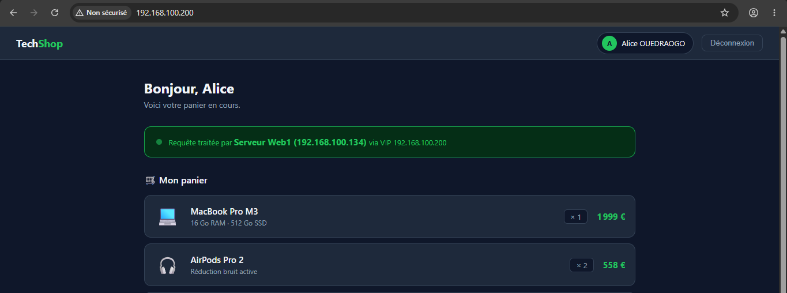
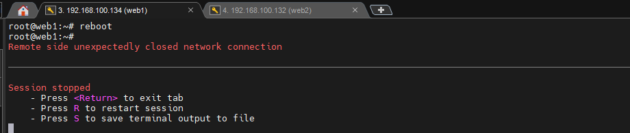
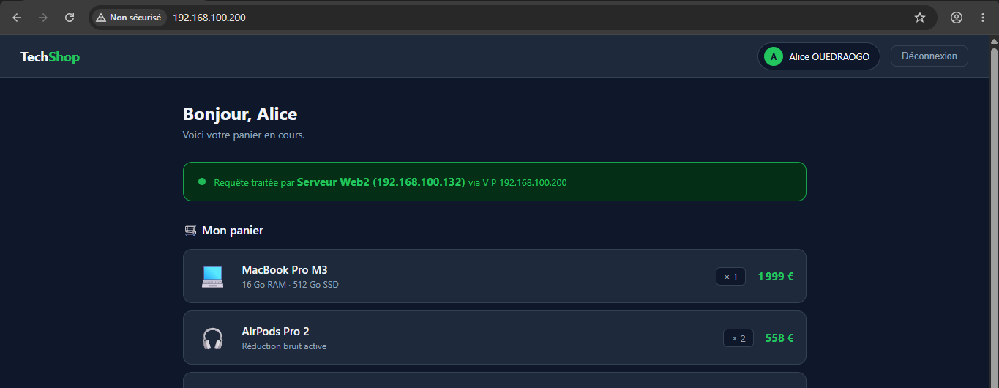
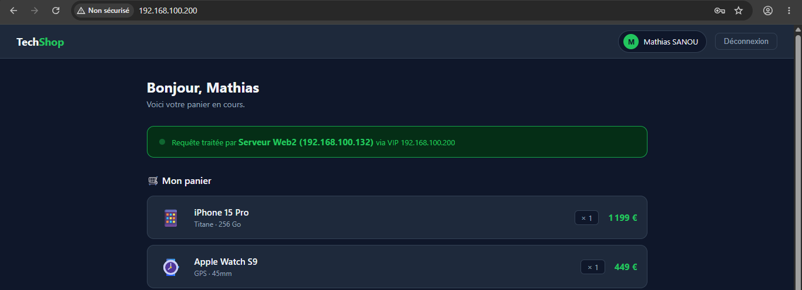
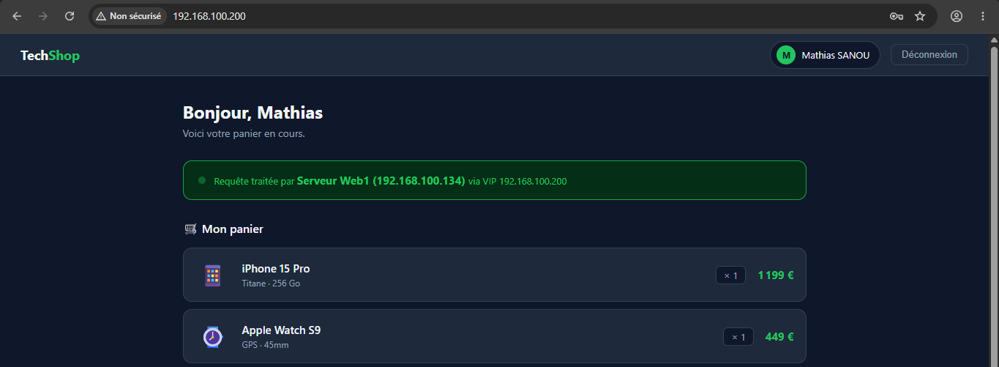

Introduction
La disponibilité permanente d'une plateforme de commerce électronique constitue un enjeu critique : toute interruption de service, même brève, entraîne une perte de revenus, une dégradation de l'expérience utilisateur et une atteinte à la confiance des clients. Dans ce contexte, la haute disponibilité (High Availability) n'est plus une option mais une exigence fondamentale de toute infrastructure de production.
Fonctionnement
La présente solution repose sur deux serveurs actifs fonctionnant en mode maître-esclave (failover). Le serveur vm1, désigné MASTER, assure le traitement de tout le trafic, tandis que le serveur vm2, en position BACKUP, demeure en veille active et prêt à prendre le relais à tout moment. Une adresse IP virtuelle (VIP), gérée par le daemon Keepalived , flotte entre les deux serveur et constitue le point d'entrée unique pour les clients. En cas de défaillance du serveur maître, cette IP est automatiquement transférée vers le serveur de secours en quelques secondes, assurant ainsi une continuité de service transparente.
Le répartiteur de charge HAProxy, distribue les requêtes HTTP entrantes vers les serveurs web
selon un algorithme configurable, tout en supervisant en permanence leur état via des health checks
applicatifs : http://192.168.100.200:8404/stats , offrant une visibilité en temps réel sur l'état des composants
et le trafic traité.
- failover : les requêtes sont envoyées uniquement au serveur principal. Si celui-ci devient indisponible, HAProxy bascule automatiquement vers un serveur de secours afin d'assurer la continuité du service.
- roundrobin : les requêtes sont réparties successivement entre tous les serveurs disponibles, chacun recevant le même nombre de connexions.
- Least Connections (leastconn) : chaque nouvelle connexion est dirigée vers le serveur ayant le plus faible nombre de connexions actives.
- Modes de poids (weight) : chaque serveur se voit attribuer un poids (weight) qui détermine la proportion de trafic qu'il recevra. Un serveur ayant un poids plus élevé traite davantage de requêtes. ce qui permet d'adapter la répartition selon les capacités matérielles de chaque serveur
Architecture de la solution
Clients
|
@IP Virtuelle (192.168.100.200)
|
vm1 est actif ?
_____OUI______|_____NON______
________|________ ______|__________
| VM1 │ | VM2 │
| 192.168.100.134 | | 192.168.100.132 |
| MASTER | | BACKUP |
| HAproxy | | HAproxy |
| Keepalived | | Keepalived |
| Nginx | | Nginx |
|_________________| |_________________|- Address fixe : il est preferable d'avoir une address IP fixe sur ces deux serveurs, car si l'adresse de l'un des serveur change cela peut annuler les configuration.
- Virtuelle IP : cette address peut être du meme reseau (192.168.100.0/24) que les deux serveurs ou d'un reseau different. Ici nous choisirons une address (192.168.100.200) du meme reseau. cette address ne doit être attribuer a aucun equipement.
- Port d’écoute HAproxy : cet port ne doit être attribuer a aucun autre service afin d’éviter un conflit de port. nous allons choisir le port 8080.
- Algorithme HAproxy : nous allons choisir ici l'algorithme failover.
- Priorité Keepalived : le daemon Keepalived verifie le serveur ayant le plus grand priorité et lui attribue address IP virtuelle.
Implementation technique
Sur les deux serveurs, certaines configuration seront identique et d'autre différent peu.
Installation sur les deux serveurs
Sur le Serveur1 (192.168.100.134) et Serveur2 (192.168.100.132), nous allons installé haproxy et keepalived.
apt update && apt upgrade -y
apt install -y haproxy keepalived
# mise à jour du système et installationsEnsuite, nous activons le forwarding IP {definir ca en fr} cela est nécessaire pour Keepalived/VRRP.
A ce effet nous allons modifié le fichier /etc/sysctl.conf. {autre role duf fichier /etc/sysctl.conf}
echo "net.ipv4.ip_nonlocal_bind = 1" >> /etc/sysctl.conf
# -t : Spécifie le type d'algorithme cryptographique à utiliser.Le fichier de config principal pour HAproxy est : /etc/haproxy/haproxy.cfg. Sur les deux serveurs,
nous allons l'editer comme suite :
global
log /dev/log local0
log /dev/log local1 notice
maxconn 50000
user haproxy
group haproxy
daemon
defaults
log global
mode http
option httplog
option dontlognull
option forwardfor
option http-server-close
timeout connect 5s
timeout client 30s
timeout server 30s
errorfile 503 /etc/haproxy/errors/503.http
#-------------------------------------------------------
# Frontend : écoute sur la VIP port 8080
#-------------------------------------------------------
frontend http_front
bind 192.168.100.200:8080
bind 127.0.0.1:8080
default_backend web_servers
#-------------------------------------------------------
# Backend : serveurs web - web1: MASTER et web2: BACKUP
#-------------------------------------------------------
backend web_servers
balance roundrobin
option httpchk
http-check send meth GET uri /health ver HTTP/1.1 hdr Host healthcheck
server web1 192.168.100.134:8080 check inter 2s rise 2 fall 3
server web1 192.168.100.132:8080 check inter 2s rise 2 fall 3 backup
#-----------------------------------------------
# DASHBOARD : http://192.168.100.200:8404/stats
#-----------------------------------------------
frontend stats
bind *:8404
stats enable
stats uri stats uri /stats
stats refresh 10s
stats auth admin:S3cur3P@ssw0rd
stats show-node
Après modification, nous verifier la configuration, avant de lancer le service haproxy avec les commandes :
haproxy -c -f /etc/haproxy/haproxy.cfg
systemctl enable --now haproxy
systemctl reload haproxy
Le fichier de configuration type pour keepalived est: /etc/keepalived/keepalived.conf.sample. Nous allons
nous inspirer de ce fichier pour creer notre fichier de configuration /etc/keepalived/keepalived.conf.
La configuration Keepalived est presque identique sur les deux serveurs. Les differences seront au niveau des
variables suivant :
- router_id : identifiant unique de l'instance Keepalived, utilisé pour l'identification et les logs.
- state : définit le rôle initial au démarrage (MASTER ou BACKUP).
- priority : détermine quel serveur sera élu maître lors de l'élection VRRP. La priorité la plus élevée l'emporte.
Sur le serveur1, les variables router_id et state prendrons la valeur MASTER
et une priorité (priority) supérieure a celui de serveur2.
#---------------------------------------------------------
# CONFIGURATION SERVEUR MAITRE - VM1 192.168.100.134
#---------------------------------------------------------
global_defs {
router_id LVS_MASTER # a modifié sur vm2 - BACKUP
script_user root
enable_script_security
}
vrrp_script chk_haproxy {
script "/usr/bin/killall -0 haproxy"
interval 2
weight -20
fall 2
rise 1
}
vrrp_instance VI_WEB {
state MASTER # a modifié sur vm2 - BACKUP
interface ens33
virtual_router_id 51
priority 110 # a modifié sur vm2 - BACKUP
advert_int 1
preempt_delay 10
authentication {
auth_type PASS
auth_pass WebHAP@ssw0rd2026!
}
virtual_ipaddress {
192.168.100.200/24 dev ens33 # ens33 : interface de reseau
}
track_script {
chk_haproxy
}
notify_master "/etc/keepalived/notify.sh MASTER"
notify_backup "/etc/keepalived/notify.sh BACKUP"
notify_fault "/etc/keepalived/notify.sh FAULT"
}
Sur le serveur2 (BACKUP) , le fichier /etc/keepalived/keepalived.conf reste identique, seulement 3 lignes changent. Les variables router_id
et state prendrons la valeur BACKUP et une priorité (priority) inférieure a
celui de serveur1.
#---------------------------------------------------------
# CONFIGURATION SERVEUR BACKUP - VM2 192.168.100.132
#---------------------------------------------------------
global_defs {
router_id LVS_BACKUP # différent
}
vrrp_instance VI_WEB {
state BACKUP # BACKUP
priority 90 # inférieure a 110
# tout le reste identique
}Après modification, nous demarons le service keepalived avec les commandes suivantes :
systemctl enable keepalived
systemctl start keepalivedVérification de l'address IP virtuelle - VIP
Sur le Sur Server1, nous allons verifier si l'address IP virtuelle a pris effet.
ip a show ens33 | grep 192.168.100.200
# résultat attendu : inet 192.168.100.200/24
Pendant que vm1 est actifs, ip a show ens33 | grep 192.168.100.200 n'affiche rien sur la vm2 et cela est
normal. Pour verifier que vm2 prend l'address IP virtuelle, on peut stimuler une panne sur vm1 soit en l’éteignant,
soit en le redémarrant. Pendant qu'il est eteint ( ou qu'il n'a pas terminee le proccessus de redemarrage ), tapez
la commande ip a show ens33 | grep 192.168.100.200 cette fois-ci, vous aurez inet 192.168.100.200/24
accesible via http://192.168.100.200:8404/stats avec les identifiants admin:S3cur3P@ssw0rd.
le port 8404 doit etre ouvert
Test de la solution
Pour tester nos configuration , nous allons modifier le fichier /var/www/html/index.html sur nos deux
serveur par une page login , affichant le panier d'un utilisateur. Nous y avons ajouter une bannière qui nous affichera
le nom du serveur ayant répondu a la requêtes. Nous allons utiliser les identifiants alice:1234
et mathias:5678. Le fichier disponible sur :
Je vais m'authentifier avec les identifiants alice:1234. Sur la banierre, nous
verons message de la bannière.

Stimulons une panne sur vm1 en le mettant hors service, ou en le redemarant.

pendant qu'il est eteint, rechargons la page et nous verons le message sur la banniere n'est plus le meme.

Nous allons profiter de l'accasion et se connecter avec les identifiants mathias:5678. rassurer vous
que la banierre precise que vous etes bien sur vm2 , car vm1 est eteint.

Une fois que vm1 est demarer, rechrger le navigateur et observer le changement.

Perspectives
la Replication des comptes utilisateurs est important. les donnees créer sur vm1 doivent également être répliquer sur vm2 (vice-versa). Pour cela il faut penser a utiliser Lsyncd .
- Synchronisation symétrique des de la base de donnee entre vm1 et vm2.
- Mise en place de la réplication des données utilisateurs entre vm1 et vm2
- Synchronisation des bases de données en mode actif-actif ou actif-passif
- Synchronisation symétrique des fichiers applicatifs (ex : articles, images produits)